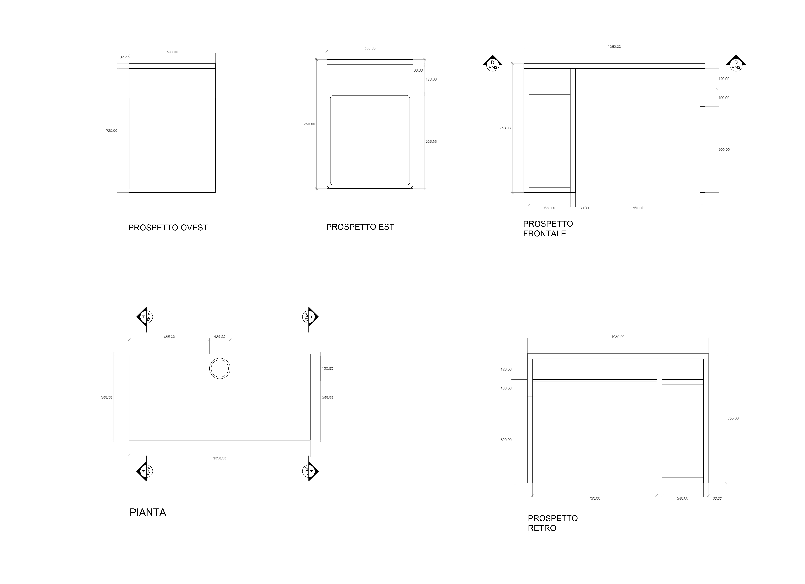
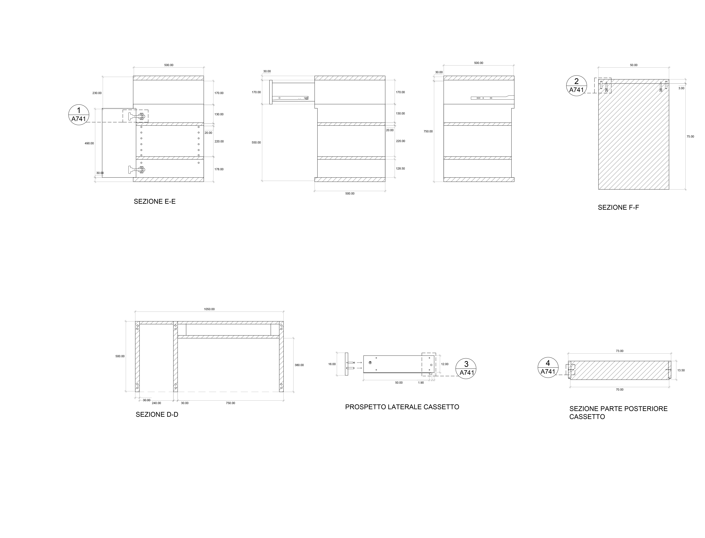

SCRIVANIA MICKE 102.447.43
Descrizione prodotto
Piano tavolo/ Pannello laterale/ Gamba di supporto/ Base: Truciolare, Fibra di legno, Carta, Lacca acrilica, Plastica ABS
Raccoglicavi/ Traversa posteriore/ Ripiano/ Parte anteriore: Truciolare, Lamina, Plastica ABS
Lato del cassetto/ Lato posteriore del cassetto: Lamina
Base del cassetto: Fibra di legno, Lacca acrilica
Gamba: Acciaio, Rivestimento epossidico/poliestere a polvere
Caratteristiche principali
- È facile tenere cavi e multiprese a portata di mano ma non in vista grazie all'apertura sul pannello di fondo.
- Puoi montare l'elemento contenitore a destra o a sinistra, in base al tuo spazio e alle tue preferenze.
- Grazie all'apertura nel pannello di fondo, l'aria circola efficacemente intorno al tuo computer e agli altri apparecchi.
- I fermacassetti evitano che i cassetti vengano estratti completamente.
- Si può collocare anche al centro della stanza, poiché il pannello di fondo è rifinito.
- Puoi ampliare la superficie utilizzabile combinando scrivanie e cassettiere. Quelle della serie MICKE hanno tutte la stessa altezza.
- Puoi regolare i ripiani per fare spazio a oggetti di diverse misure e riorganizzarli se le tue esigenze cambiano. I ripiani regolabili ti permettono di usare lo spazio in modo più efficiente.
Designer
Henrik Preutz
Download
PDF
Istruzioni IKEA
PROSPETTI E SEZIONI

DETTAGLI


ABACO ELEMENTI

Sito sviluppato per il corso di Strumenti e Metodi del progetto